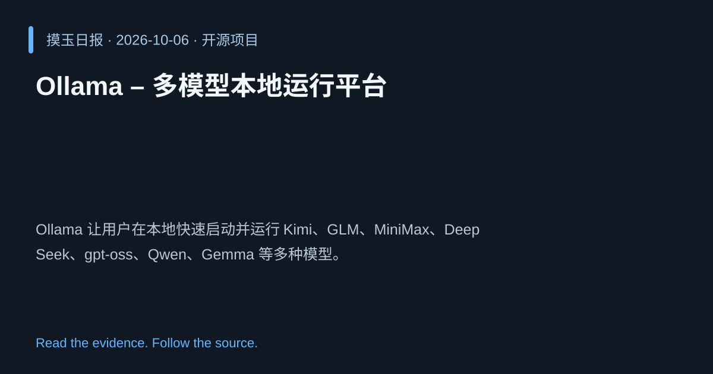

2026-10-06 · Asia/Shanghai · 开源项目 · #14
Ollama – 多模型本地运行平台
ollama/ollama
Ollama 让用户在本地快速启动并运行 Kimi、GLM、MiniMax、DeepSeek、gpt‑oss、Qwen、Gemma 等多种模型。
为什么值得关注
降低对云服务依赖，提升模型部署灵活性，满足本地化 AI 需求。

热度 20.0 / 100；排名与评分保留该期记录。
2026-10-06 · Asia/Shanghai · 开源项目 · #14
ollama/ollama
Ollama 让用户在本地快速启动并运行 Kimi、GLM、MiniMax、DeepSeek、gpt‑oss、Qwen、Gemma 等多种模型。
降低对云服务依赖，提升模型部署灵活性，满足本地化 AI 需求。

热度 20.0 / 100；排名与评分保留该期记录。